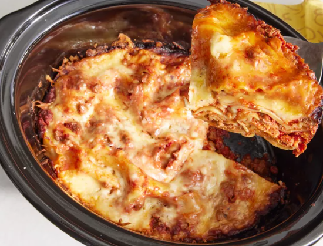

Lasagna
Home

Description
This crockpot lasagna recipe is so easy, you might think that you missed
something. It is a delicious slow cooker meal!
Ingredients
- 1 pound lean ground beef
- 1 medium onion
- chopped 2 teaspoons minced garlic
Directions
- Gather all ingredients
-
Cook ground beef, onion, and garlic in a large skillet over medium heat
until the meat is browned.
-
Add tomato sauce, tomato paste, salt, and oregano and stir until well
combined and heated through.
-
Stir mozzarella, cottage cheese, and Parmesan together in a large bowl.